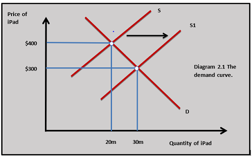
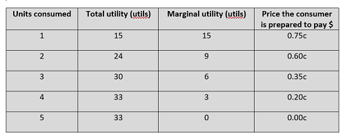
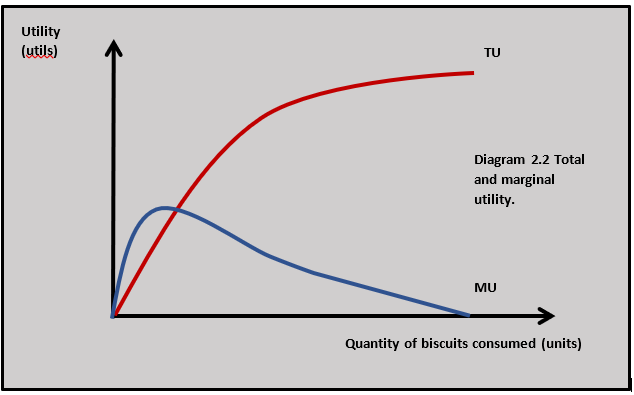
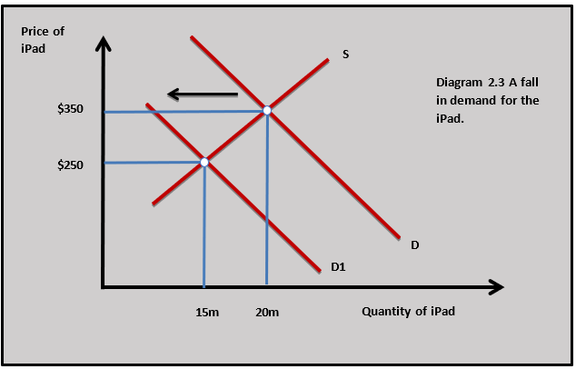
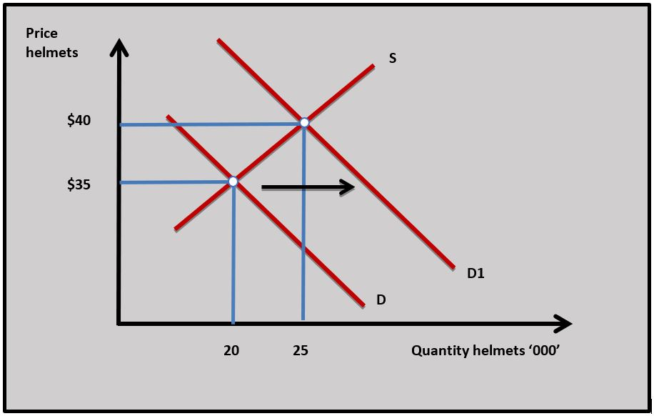
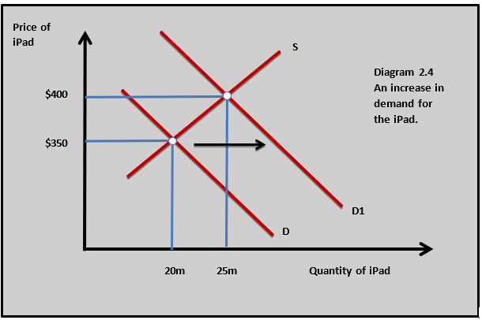
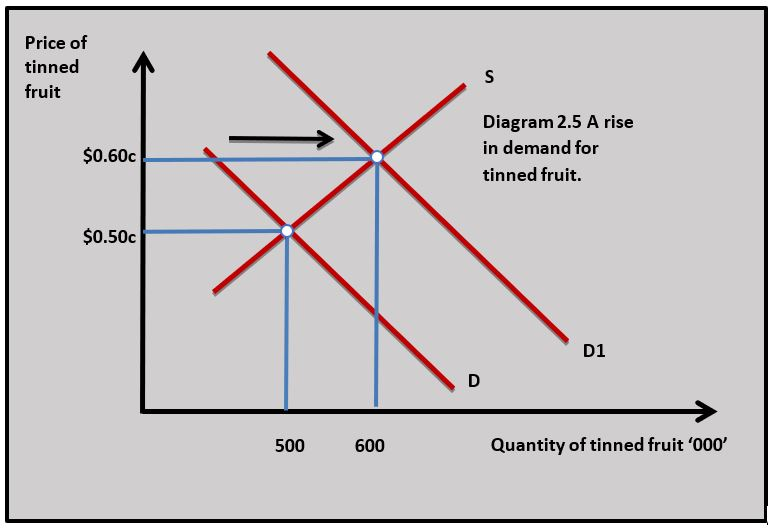
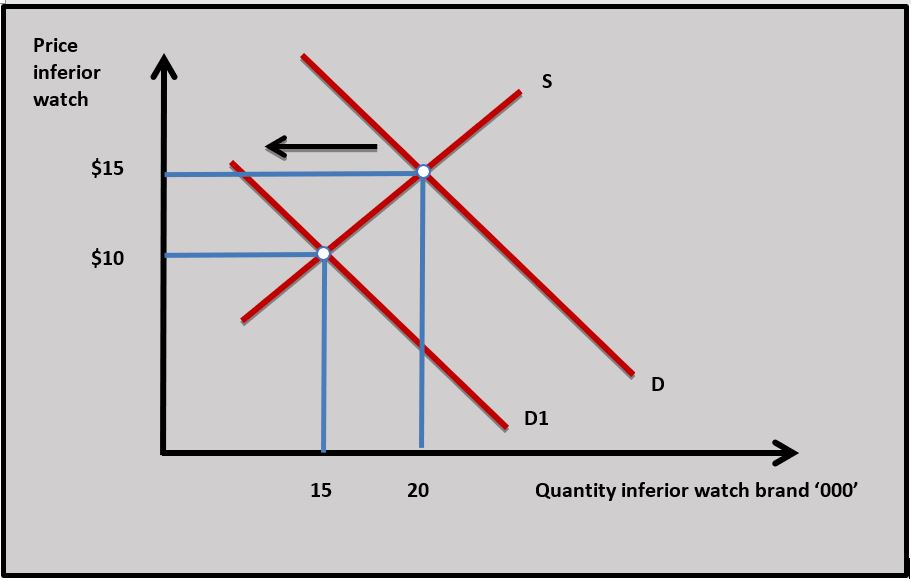
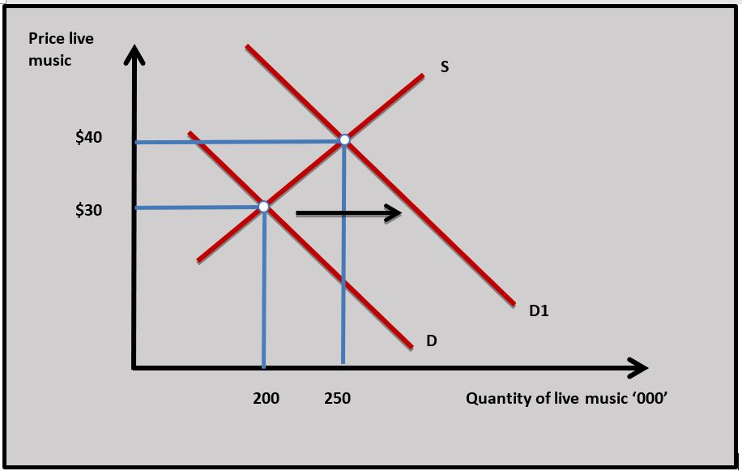
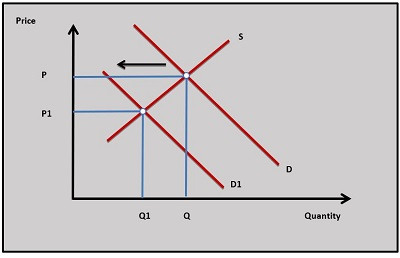

IB Docs (2) Team
IB Docs (2) Team

Unit 2.1: Demand theory
Unit 2.1 is the first section in microeconomics. In our introduction to Economics, we considered the question of how resources are allocated in society and the first step to answering this question is examined in this chapter. Demand for goods and services is critical in understanding how markets work and allocate scarce resources.
Revision material
 The link to the attached pdf is revision material from Unit 2.1: Demand theory. The revision material can be downloaded as a student handout.
The link to the attached pdf is revision material from Unit 2.1: Demand theory. The revision material can be downloaded as a student handout.
The importance of markets
Neoclassical economic theory is the behaviour of markets based on demand and supply. The theory is focused on four basic theoretical market structures that are used to analyse how markets behave. The four structures are:
- Perfect competition
- Monopolistic competition
- Oligopoly
- Monopoly
*Detailed theory on these market structures is set out in chapters 2.11(2) - 2.11(4).
Defining demand
Demand is the willingness and ability of consumers to pay a sum of money for a good or service at a given price and at a given point in time. Demand theory comes from the ‘human wants’ part of the central economic problem. Individuals want to buy goods and services because of the satisfaction they gain from consuming them. For example, the demand for social media sites like Facebook and Instagram is partly based on the human desire to interact with different groups and individuals.
The law of demand – how price affects quantity demanded
*In the analysis of demand and supply in Unit 2.1 and Unit 2.2 both the demand and supply curves are used in the diagrams to illustrate how different variables affect demand and supply in markets. In the coverage of demand in this chapter, an upward sloping supply curve is used to represent the output of firms in different markets. This is covered in detail in Unit 2.2. Changes in demand and supply in markets will affect price and output in markets and this is covered in detail in Unit 2.3 on competitive market equilibrium.
The law of demand states that as the price of a good or service rises, the quantity demanded falls and as the price of a good falls, the quantity demanded rises (ceteris paribus). As such, there is a negative relationship between price and quantity demanded.
The demand curve

The demand curve or demand schedule shows the negative relationship between the price and quantity demanded of a good or service. This is shown in diagram 2.1 where the quantity demanded of the iPad increases from 20m units to 30m units as the price of them falls from $400 to $300. In this case, the price has fallen because the supply of the iPad has increased because of improvements in technology.
Real income effect (HL)
The real income effect can be used to explain the law of demand because a change in the price of a good affects the income households have available to buy the good. As the price of a good falls, the quantity demanded increases partly because of the real income effect. At a lower price, consumers can afford more of the product than at higher prices. In this case, the fall in the price of the iPad from $400 to $300 makes them more affordable to consumers, so the quantity demanded rises. The opposite occurs if the price of the iPad rises and consumers have effectively less real income to buy the good.
Substitution effect (HL)
The substitution effect is based on the price of a good or service relative to alternative products consumers can buy to satisfy the same or similar human want. As the price of a good falls, the quantity demanded rises partly because the good offers greater satisfaction to the consumer per unit of money spent compared to its substitutes. For example, if the price of the iPad falls, it offers more satisfaction per unit of money spent compared to its substitutes. This means consumers substitute towards the iPad away from PCs. The opposite occurs if the price of a good rises and it offers less satisfaction per unit of money spent compared to its substitutes.
 The price of mobile phones has fallen dramatically since they were first released onto the consumer market in the United States in the early 1980s. The data in the table sets out the change in price and ownership of mobile phones from 1993 to 2013 in the US.
The price of mobile phones has fallen dramatically since they were first released onto the consumer market in the United States in the early 1980s. The data in the table sets out the change in price and ownership of mobile phones from 1993 to 2013 in the US.
Questions
a. Define the term demand. [2]
Demand is the willingness and ability of consumers to pay a sum of money for a good or service at a given price and at a given point in time.
b. Outline the law of demand. [2]
The law of demand states that as the price of a good or service rises, the quantity demanded falls and as the price of a good falls, the quantity demanded rises.
c. Explain the income and substitution effects as the price of mobile phones falls from 1983 to 2003. [4]
The income effect shows that as the price of mobile phones has fallen from 1983 to 2003, they have become more affordable for consumers as their price accounts for a smaller proportion of consumer income.
The substitution effect shows how the fall in the price of mobile phones makes them relatively less expensive compared to substitute goods such as land-line phones which makes mobile phones more attractive to buy.
d. Explain two reasons that might account for the ownership of mobile phones increasing from 2003 to 2013 even though the price has increased. [4]
The ownership of mobile phones might have increased from 2003 to 2013 because the quality of the mobile phone has improved which makes the phone more attractive to buyers even though it is at a higher price. The iPhone, for example, offered more sophisticated features than the Blackberry such as touchscreen use and a better visual display.
e. Explain two reasons that might account for an increase in demand for mobile phones. [10]
Answers might include:
- Definition of demand
- The diagram shows an increase in demand for mobile phones from D to D1.
- An explanation that the demand for mobile phones might have increased because of a fall in the price of complementary goods to mobile phones such as data usage and contract costs.
- An explanation that the demand for mobile phones might have increased because mobile phones are a normal good and there are rising household incomes.
- An explanation that the demand for mobile phones might have increased because the quality of the mobile phone has improved which makes phones more attractive to buyers.
- An explanation that the demand for mobile phones might have increased because of changes in consumer tastes and preferences towards mobile phones which could have been affected by advertising and promotion.
- Example of an increase in the demand for mobile phones such as the Apple iPhone.
Investigation
Research into another consumer good where the price of the product has fallen over time and ownership has increased.
The law of diminishing marginal utility
Utility
Utility theory is based on looking at demand in terms of the satisfaction an individual receives from consuming a good or service. The more satisfaction an individual receives from consuming a good the greater their demand for that good. A person’s satisfaction can be measured in terms of the number of utils they gain from consuming a good or service. A util is a unit of satisfaction. Total utility is the total satisfaction an individual derives from consuming successive units of a good.
Marginal utility
Marginal utility is the satisfaction an individual receives from the last unit of the good they consume and is measured in utils. In demand theory, you can relate the marginal utility someone gets from consuming a good to the price they are prepared to pay for the good. The higher the marginal utility a person gets from consuming a good, the higher the price they are prepared to pay for the good.

The law of diminishing marginal utility states that for each extra unit of a good consumed by an individual, the marginal utility they receive from consuming the good falls. This is shown in the table where a person is consuming increasing units of chocolate biscuits.
For each extra biscuit, the individual consumes the marginal utility falls. Consider the utility data in the table. When you are hungry the first biscuit will give you lots of satisfaction (15 utils) but as you consume increasing numbers of biscuits the marginal utility of each extra biscuit falls because you get less and less satisfaction from consuming each biscuit. Eventually, you will reach a point of consumption where you get no satisfaction at all from the good, which is the case with the fifth biscuit (0 utils).
Relationship between total utility and marginal utility

The relationship between total utility and marginal utility and units consumed is shown in diagram 2.2. If you relate the marginal utility from consuming each biscuit to the price the individual is prepared to pay for the biscuit in the table, you can see the price the individual is willing to pay falls as consumption increases because the marginal utility falls.Marginal utility and the law of demand
The law of diminishing marginal utility can be used to explain the law of demand. If individuals get less marginal utility from the higher quantities they consume, they will be willing to pay a lower price. As quantity increases, price decreases. If an individual receives more marginal utility from less quantity consumed then they will be willing to pay a higher price. As quantity decreases, price increases.
This is shown in the table where the amount the individual is prepared to pay for the chocolate biscuits goes down as their marginal utility diminishes. For example, the individual in the table is prepared to pay 0.75c for the first biscuit they consume because they receive 15 utils (marginal utility) of satisfaction from its consumption, but are only willing to pay 0.20c for the fourth biscuit because they get 3 utils (marginal utility) of satisfaction from its consumption.
Many people enjoy an all-you-can-eat restaurant because the opportunity to eat limitless amounts of food is an attractive proposition when you are hungry. Some restaurants see this as a profitable business model because they can charge customers a fixed price for a limited menu. Some customers may well spend more in the all-you-can-eat situation because they would stop eating (and spending) when their total utility is maximised which is not the case in an all-you-can-eat restaurant because the customer has already paid the total price for the food.
The table shows the total of consuming food in an all-you-can-eat restaurant.
| Units consumed | Marginal utility |
| 1 | 12 |
| 2 | 17 |
| 3 | 10 |
| 4 | 3 |
| 5 | -7 |
 Worksheet questions
Worksheet questions
Questions
a. Define the term utility. [2]
Utility is the satisfaction an individual receives from consuming a good.
b. From the data in the table calculate the following:
(i) The total utility of consuming 5 units of food in the restaurant. [2]
12 + 17 + 10 + 3 + -7 = 35 utils
(ii) The level of consumption that maximises the individual's utility. [2]
12 + 17 + 10 + 3 = 42 utils is maximum utility
c. Explain the link between the price a consumer is willing to pay for units of food and the marginal utility they receive from consuming the food. [4]
As the individual consumes more units of food the marginal utility they receive falls (law of diminishing marginal utility) and the price they are prepared to pay for the food decreases as they receive less marginal utility.
Investigation
Research an all-you-can-eat-restaurant and think about the reasons why it might be an effective business model.
Relationship between an individual consumer’s demand and market demand
The market demand curve for a good or service is derived by summing the demand curves of all the individuals in the market. In the market for music streaming, for example, the quantity demanded of each consumer at a given price is added together to get the market demand at that price.
Price of related goods and demand
Substitutes

A substitute for a good is an alternative product that can be used to satisfy a similar want in place of a good. A substitute for the iPad, for example, would be laptops. The more precisely a good is defined the easier it is to find substitutes for it. One brand of laptop computer, such as Sony, has many close substitutes from firms such as Panasonic, LG and Lenovo. There are also substitutes for Sony laptops such as personal computers and smartphones, but these are not as close as the branded alternatives.
There is a positive relationship between the price of a substitute for a good and the demand for the good itself. If the price of laptops, a substitute for the iPad falls, then the demand for the iPad will fall as consumers substitute away from the iPad to the relatively lower-priced laptop.
Changes in the price of a substitute for a good cause a change in demand for the good and the demand curve shifts. This means the quantity demanded for a good changes at each price. In our IPad example, a fall in the price of laptops causes the demand for the iPad to shift to the left. The fall in demand for the iPad is shown in diagram 2.3. As demand falls, the price of the iPad and the quantity traded both fall.
Complements
A complement is a good that can be consumed together with another good. The complements for the iPad include goods such as broadband connection, iPad stylus, cases, screen protectors and apps. For example, if you buy an iPad you may also want to get a broadband connection in your house to access the internet on your tablet or buy some apps to access different web-based services.
There is a negative relationship between the price of a complement for a good and the demand for the good itself. If the price of a complementary good for the iPad, such as broadband connection falls, then the demand for the iPad increases. This is shown in diagram 2.4.
Shops can barely keep up with demand as bikes – and even parts – sell out. Sport England’s figures show a huge increase in cycling over the last two years. Steve Garidis, the executive director of the Bicycle Association, the body that represents the industry in the UK, says the number of people cycling in the UK will continue to increase as cycling grows in popularity as a sport, cycling infrastructure improves and the price of petrol remains high.
One factor working against cycling is an increase in the price of bikes over the last 12 months. Manufacturers have struggled with supply chain problems and an increase in the cost of bike components.
Adapted from https://www.theguardian.com/
Questions
a. Outline two substitute goods for bicycles. [2]
A substitute good for bicycles would be an alternative good that could fulfil a similar want such as a moped or public transport such as a bus.
b. Using a diagram explain the impact of rising demand for bicycles might have on the demand for a complementary good for bicycles. [4]

As the demand for bicycles increases there could be an increase in demand for bicycle lights, repairs, cycle clothing and helmets, etc. For example, the demand for helmets would increase in demand from D to D1.c. Using the income and substitution effect, explain how an increase in the price of bicycles will affect the quantity demanded for bicycles. [4]
As the price of bicycles increases, they become more expensive relative to substitute goods such as bus travel (substitution effect). Higher-priced bikes also mean buyers will have less available income to spend on bicycles (real-income effect). The combination of the income and substitution effect means an increase in the price of bicycles leads to a fall in quantity demanded.
Investigation
Research another market that experienced an increase in demand during the Covid 19 pandemic.
Income and demand
There are four basic relationships between the demand for a good and consumer income.
Normal goods

Normal goods demonstrate a positive relationship between income and demand. As income rises the demand for normal goods rises, and as income falls, demand falls. This is shown by shifts in the demand curve for a good. Most goods are normal goods. If household incomes rise they will spend more money on food, transport, housing, furniture etc. For example, a rise in income would lead to a rise in demand for the iPad, as shown in diagram 2.4 with a rise in price and quantity sold.
Necessity goods
Necessity goods are a type of normal good. They are goods that consumers need to sustain their normal lives. They include basic staple foods like bread and rice, housing, electricity and clothing. As household incomes rise, demand for necessity goods will increase, but at a less than proportionate rate than the increase in income. For example, if a person gets a 5 per cent pay rise may well use more electricity, but we might expect their consumption of electricity to rise by only 2 per cent.
Luxury goods
Luxury goods are another type of normal good. Economists sometimes refer to luxury goods when there is a strong positive correlation between income and demand. As household incomes increase, the demand for luxury goods increases by a greater than proportionate amount relative to the rise in income. This normally applies to goods and services consumers do not need to buy to sustain their lives, such as holidays, branded clothing, restaurant meals and tickets to the cinema.
Inferior goods

Inferior goods show a negative relationship between income and demand. As household incomes rise, the demand for an inferior goods falls and as incomes fall, demand for an inferior goods rises. This relationship often applies to lower-priced goods such as tinned fruit and vegetables, processed meats and manmade fibre clothing. Diagram 2.5 shows a rise in demand for tinned fruit as incomes fall in a recession.The most recent data from the Swiss Watch Industry shows sales of watches up 7.1% last year. Growth in overseas markets has been led by Hong Kong (+21%), US (+8%) and China (+14%). The prestige watch market has seen particularly strong growth with sales up 11%, while watches at the less expensive end of the market experiencing only a 2% rise in sales. Leading Swiss brands such as Rolex, Patek Philippe, Longines and Jaeger-LeCoultre have all seen particularly strong sales growth.
The prestige watch market is a good example of a luxury good and how demand is affected by rising incomes. But not all watches are at the prestige end of the market some brands at the less expensive end of the market will only experience a modest rise in sales as incomes rise and for some demand might even fall.
Worksheet questions
Questions
a. Define the term necessity good. [2]
A necessity good is a good with a positive relationship between changes in demand and changes in income but the change in income causes a less than proportionate change in demand.
b. Explain the difference between a luxury good and a normal good. [4]
The demand for normal goods and luxury goods has a positive relationship with income. As incomes increase the demand for both of them increases. Luxury goods are normal goods but they have a strong relationship between the demand for them and changes in income. For example, the demand for watches will increase as incomes rise but the demand for luxury watches will increase more than proportionally.
c. Using a diagram, explain why the demand for certain brands of watch might fall as income increases. [4]

Certain brands of cheap watches might be inferior goods. As incomes rise the demand for inferior watch brands would decrease and this could be shown by a fall in demand from D to D1 in the diagram.Investigation
Research another market for prestige goods and investigate what has happened to demand in that market over the last two years.
Other factors that change demand
Population and demographics
Population changes can have a significant impact on the demand for a good because it affects the number of consumers in the market. Population growth at a national or local level will cause a rise in demand for many goods and services, but it is often most noticeable in the demand for goods such as transport, housing, education and healthcare. At a global level, a rise in the world’s population leads to a rise in demand for goods such as food and water. In terms of population structure, there is an ageing population in many developed countries which has led to a rise in demand for healthcare-related goods and services.
Consumer taste
Consumer tastes change over time due to social and cultural changes. The rise in demand for vegetarian and vegan food is partly due to social change, as more people give up eating meat for animal welfare, and environmental and health reasons. Firms can influence consumer taste through advertising and promotion. The huge sums spent by the sports businesses Nike and Adidas have a major impact on the demand for the products they sell.
Price expectations
The demand for a good or service in the present can be affected by consumers’ expectations of what the price for that product might be in the future. If, for example, a government plans to increase indirect taxes on new cars, consumers may decide to buy their car now rather than wait until the tax increases the price of the car in the future. This could increase the demand for new cars in the present.
Expectations are particularly important in asset markets like shares and houses. Expectations of a future rise in house prices can increase the demand for houses in the present and this makes the price of houses rise now and into the future. For example, if a person expects the price of houses to rise by 10 per cent next year, then they buy a house now and own an asset that may be worth 10 per cent more in a year’s time.
Record numbers of people are going to watch live music. Attendances at concerts and festivals have seen a 12% rise in numbers last year. A UK music study has found that audience numbers have reached 30.9 million in 2019, up nearly 25% from 2015. Over 4 million people attended music festivals in 2019. This is clear evidence that the live music market is flourishing in the UK. Ticket sales and merchandise are the main ways in which most artists in the music industry earn their revenue. Research has shown that people are willing to travel from all parts of the UK to attend events, and many people come into the UK from abroad to watch their favourite bands. Music tourism increased by 20% in 2019, with nearly 1 million people travelling to the UK from abroad to attend concerts.
There is clear evidence of an increase in demand for live music. There are several factors to think about here:
- A change in taste and preferences towards the live music experience
- Improved quality of live music events
- The range of artists performing live
- Rising household incomes
- Effective advertising and promotion of music events.
Worksheet questions
Question
Explain two reasons for a rise in the demand for live music. [10]
Answers might include:

- Definition of demand.
- A diagram showing a rise in demand for live music. The diagram opposite shows an increase in demand for live music from D to D1
- An explanation of how a rise in demand for live music could be caused by rising incomes assuming live music is a normal good.
- An explanation that a rise in the price of a substitute good such as the cinema could increase the demand for live music.
- An explanation of how a fall in the price of complements such hotels and transport could increase the demand for live music.
- An explanation that a change in consumer taste and preferences in favour of live music could increase the demand for it.
Note - a fall in the price of live music should not be included because it changes quantity demanded not demand.
Investigation
Do some research into a growing market in your economy. Think about the reasons why it is increasing in size.
The law of demand states:
The law of demand is the negative relationship between price and quantity demanded.
As the price of smartphones decreases quantity demanded increases because of all of the following except:
The income and substitution effects increase the quantity demanded for smartphones when their price decreases.
Which of the following would have caused the demand curve for a normal good to shift from D to D1 in the diagram?

Which of the following is unlikely to be a complementary good for a bicycle?
Scooters are more likely to be substitutes for bicycles. The others are complements.
When an individual drinks a third cup of coffee their total utility increases from 20 utils to 25 utils. From the second cup of coffee, their marginal utility is 8 utils. Which of the following is true?
If the total utility of the second cup consumed is 20 utils and the second cup had a marginal utility of 8 utils then the first cup must have had a marginal utility of 12 utils.
A government has planned to put a subsidy on electric cars which will cause car prices to fall in 6 months time. Which of the following is the most likely outcome on the market for electric cars?
The demand for electric cars is likely to fall immediately because consumers expect prices to fall in the future.
If consumers expect that the price of olive oil to increase in the future, what will happen to the equilibrium price and quantity of olive oil now?
Demand for olive oil shifts outwards as demand increases and this cause market price and quantity to increase.
A significant rise in the price of train travel is most likely to lead to a:
The demand for buses as a substitute good will increase as the price of train travel increases.
A country has an ageing population. Which of the following is least likely to be true:
Teeth braces (retainers) are normally bought by parents for children or by young people.
Which of the following is least likely to be the consequence of falling household incomes in a recession?
Air travel is a normal/luxury good and in a recession demand for it will fall.
 Twitter
Twitter
 Facebook
Facebook
 LinkedIn
LinkedIn